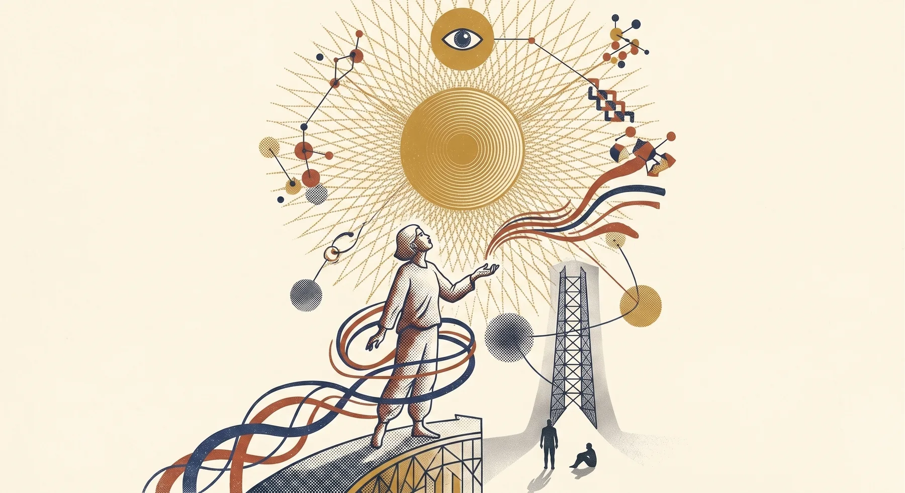

You can feel the wave. You can't yet see your part in it. Let's go look.
✕ fallacy of identity Inspiration answers "I'm the [Excel] person. The deck person. The one who is my craft."
✕ fallacy of yesterday And "I tried it last year and it got things wrong." That snapshot is old. Look again.

You need a north star.
Stop asking what to learn.
Ask what to become.
Something nagged at you. A friend mentioned an agent that spent the afternoon on a job that used to eat her whole week. A clip on your phone showed someone build a working app over coffee. You went back to your desk, and the spreadsheet looked smaller than it did yesterday.
That feeling, somewhere between fear and curiosity, is the most useful sense you have right now. Don't make it go away. Aim it. Most of what reaches you treats AI as one more tool to learn. A better question is what you'd ask of it if you let yourself want bigger things.
That's hard to do, because we see every new thing through the thing it replaces. In the early nineties, cable promised five hundred channels, and people worried about how thick the TV guide would get. Nobody pictured watching whatever you want, whenever you want, made by millions of people who never worked in television. A faster version of your current job is the five-hundred-channel answer. Your north star is further out than that.
So picture it. Imagine if the deck you've mocked up in your head twelve times got built. Imagine if the novel you've been putting off for ten years got written this fall. Imagine if the side project you keep carrying around turned out to be where your career was pointing.
And remember who's on the other side of the screen: a strong coder, analyst, project manager, accountant, lawyer, writer and editor, in one window, all at once. On a first pass at most of that work, it already beats most of us. You're qualified to ask for the bigger thing.
If you lead a team, this is your job too. They've heard about AI from every keynote and every feed. What they haven't seen is where it's going for them. Make the future visible in the daily work, and the pull does more than any rollout plan.
Think two years out. Speculative thinking pulls you forward. Most people are still being pushed.
Tap any card. Each one is a small analogy that explains the moment. The back has the rest of it.
People described the new thing by the old one. For a while that was all they could see.
turn over↻What the car did was redraw the map: suburbs, highways, the commute, the drive-through, the motel. Whole trades appeared that nobody had a name for in 1900. Anyone who pictured a faster carriage got the car right and missed everything it changed. Most AI talk today is faster-carriage talk: the same work, done quicker. The bigger changes are the ones we don't have names for yet.
Try this: ask what your work looks like once the routine parts are handled. turn back↺Neither was social media manager or UX researcher. The internet invented whole categories of work.
turn over↻Something like it is starting now. Work is appearing that has no settled title: people who direct agents, people who keep a company's knowledge in a form AI can use, people who check what the machines produce. The titles will arrive after the work does. The people who end up holding them are the ones trying things now, while it's still optional.
Try this: ask which parts of your job don't have a name yet. turn back↺HAL. JARVIS. Samantha. The replicants.
turn over↻Science fiction has been working through our hopes and fears about AI for generations, and now the technology has arrived. Most of those stories got the feeling right and the details wrong. What showed up is closer to a tireless collaborator than a robot overlord. It knows a little about everything, and it doesn't get defensive when you push back.
Try this: push back on its next answer and see how it responds. turn back↺Four prompts for the day you stop asking "how do I do this?" and start asking "what do I wish?" Pick one and say it to Claude.
Imagine if the thing you wonder about on a Sunday drive became a designed, sourced page by Monday morning. Ask for it: the question, the data, the charts.
Imagine if the book, the course or the plan you've carried for ten years had a first draft by the end of the month. Start by telling it the whole idea, badly.
Imagine if you asked it to describe your role in 2028, with the routine parts handled. Then ask which of those parts you could hand over this month.
Imagine if each person on your team got their own way in, matched to how they think: skeptic, optimist, sci-fi reader, practical doer. Ask it to draft all four.
On what AI can't do yet, and why that still matters.
Take the quiz. Free, ninety seconds, no email. It names your fallacy and hands you the Curio Starter (a PDF and a Claude skill) with five things to try this week.
Read more. The longer essays behind this guide are on the Substack.
"Yes. But I still don't know what's worth my attention this week."
What to actually use, what to ignore.